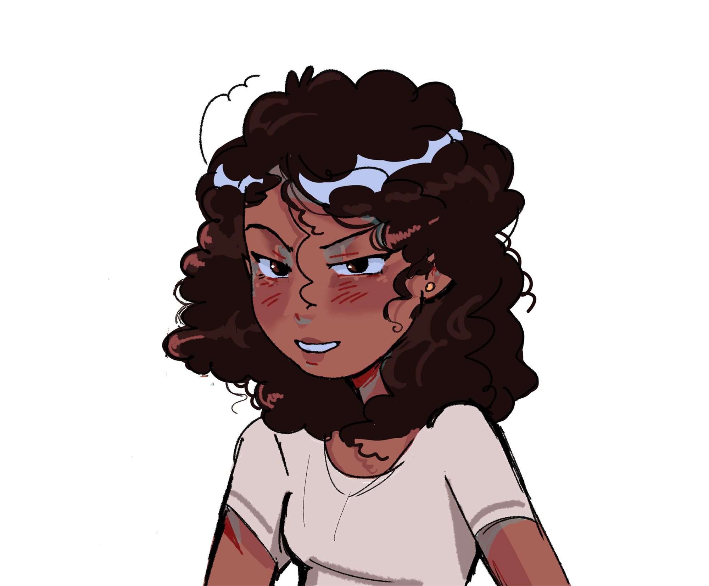

Sobre mí
Sobre mí
Soy ingeniera de software y artista digital apasionada por la creación de experiencias visuales con identidad única. Combino arte y tecnología para desarrollar soluciones creativas que conectan tanto a nivel visual como funcional. Cuento con experiencia en desarrollo frontend y backend, adquirida a través de proyectos académicos y prácticos, utilizando tecnologías como JavaScript y Python. En backend, he trabajado con FastAPI para la construcción de APIs, así como con bases de datos PostgreSQL y MySQL. Además, tengo conocimientos en arquitectura de software, aplicando principios de modularidad, organización y buenas prácticas en el desarrollo de aplicaciones.
En el ámbito artístico, creo ilustraciones digitales enfocadas en transmitir emociones y contar historias mediante el uso de color, luz y composición. Me interesa integrar diseño y desarrollo para construir productos digitales completos, funcionales y visualmente atractivos.
